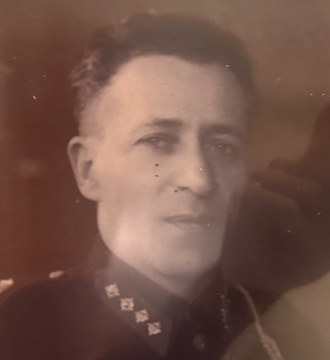
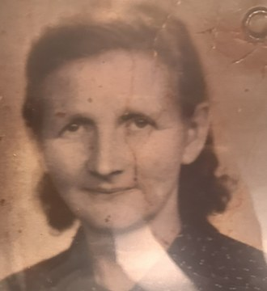
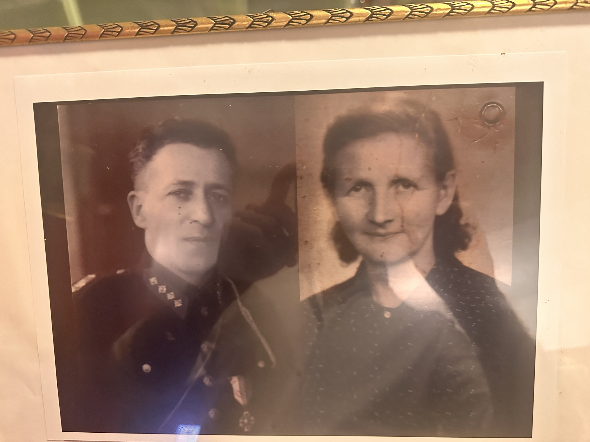
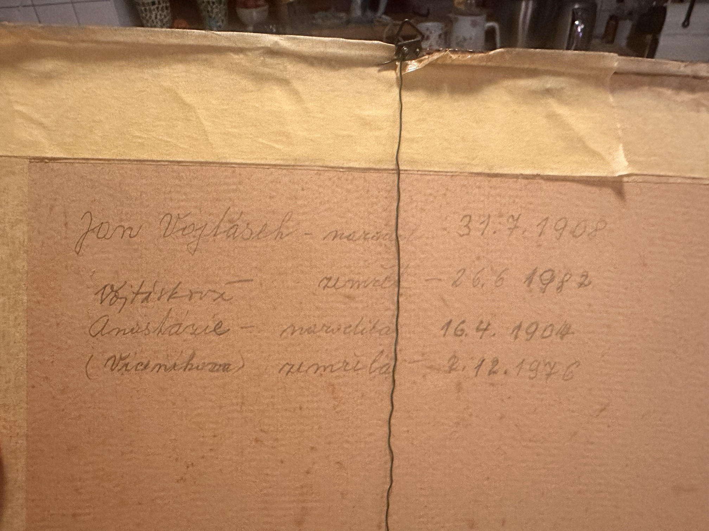

Rodokmen Vojtáskových
Rudimov u Luhačovic, okres Zlín
Rodiče
Otec Jana
Vojtásek
doplnit
Vojtásek
doplnit
Matka Jana
doplnit
doplnit
Otec Anastázie
rodné příjmení?
doplnit
rodné příjmení?
doplnit
Matka Anastázie
doplnit
doplnit
Manželé

Jan Vojtásek
* 31. 7. 1908
† 26. 6. 1982
† 26. 6. 1982

Anastázie Vojtásková
roz. Viceníková (?)
* 16. 4. 1904
† 2. 12. 1976
† 2. 12. 1976
Děti
Syn nebo dcera
rodič Petra
doplnit
rodič Petra
doplnit
Další děti
doplnit
doplnit
Vnoučata
Petr Vojtásek
Pravnoučata
Miriam (Miri) Vojtásková
Poznámky k údajům
- Jména a data pocházejí z tužkou psaného zápisu na zadní straně zarámované fotografie.
- Příjmení: zápis zní „Jan Vojtásek“ a „Vojtásková“. V rodině se uvádí také „Vitásek / Vitáskovi“. Je třeba ověřit v matrice.
- Rodné příjmení Anastázie je v závorce špatně čitelné, nejspíš „Viceníková“. Možná je to i „Vicaníková“ nebo „Vicenáková“.
- Datum úmrtí Anastázie: první číslice je přepsaná, nejspíš 2. 12. 1976. Možné je i 7. 12. 1976.
- Anastázie byla o čtyři roky starší než Jan.
- Petr nese příjmení Vojtásek, takže jeho otcem byl nejspíš syn Jana a Anastázie. Jméno je potřeba doplnit.
- Kde ověřit: matriky Rudimova jsou v Moravském zemském archivu v Brně, online na actapublica.eu. Narození z let 1904 a 1908 jsou už veřejně dostupná. Pro mladší záznamy (sňatek, úmrtí) se obraťte na obecní úřad Rudimov. Řeknou vám, který matriční úřad je příslušný.

